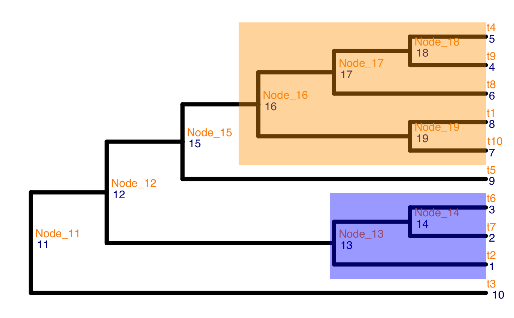

getLevel.RdgetLevel searches for the target level of the tree via a specified
score. The score value needs to be provided for each node of the tree.
getLevel( tree, score_data, drop, score_column, node_column, get_max, parent_first = TRUE, message = FALSE )
| tree | a phylo object to provide the hierarchical structure of nodes. |
|---|---|
| score_data | a data frame to provide scores for all nodes of the tree. The data frame should have at least 2 columns, one stores information about nodes (the node number) and the other stores score for each node. These columns could be named freely. |
| drop | a logical expression indicating elements or rows to keep: missing values are taken as false. |
| score_column | the name of the score column. The search is based on the score value. |
| node_column | the name of the column that stores the node number. |
| get_max | a logical value, TRUE or FALSE. If TRUE, search for nodes that has higher score value than its descendants; otherwise, search for nodes that has lower score value than its descendants. |
| parent_first | a logical value, TRUE or FALSE. If TRUE, the parent node is selected if tied values occur on the parent node and some of the chidren nodes. |
| message | a logical value, TRUE or FALSE. The default is FALSE. If TRUE, the progress message is printed out. |
a value
Ruizhu huang
library(TreeSummarizedExperiment) library(ggtree) data("tinyTree") ggtree(tinyTree, size = 2, branch.length = "none") + geom_text2(aes(label = node), color = "darkblue", hjust = -0.5, vjust = 0.7, size = 4) + geom_text2(aes(label = label), color = "darkorange", hjust = -0.1, vjust = -0.7, size = 4) + geom_hilight(13, fill = "blue", alpha = 0.4) + geom_hilight(16, fill = "orange", alpha = 0.4)# generate score for each node pv <- rep(0.1, 19) # pv[c(3, 13:14)] <- 0.01 # pv[1:2] <- NA pv[c(16, 13, 17)] <- 0.01 out <- data.frame(node = 1:19, pvalue = pv) # search nodes final <- getLevel(tree = tinyTree, score_data = out, drop = pvalue > 0.05, score_column = "pvalue", node_column = "node", get_max = FALSE, parent_first = TRUE, message = FALSE) # No node is kept because there is no difference between two groups final$node[final$keep]#> [1] 13 16